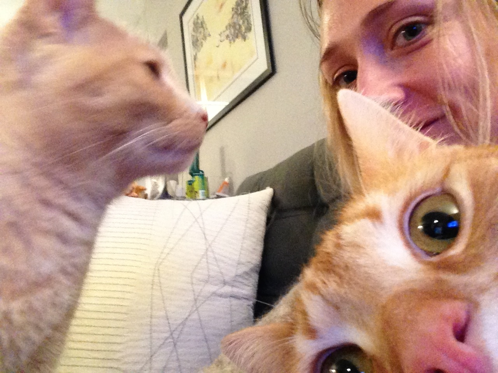

In this post, I'm attempting to learn how to insert and style images and videos. The image I'm working with is a jpg of me and my two cats, and the video is an .mov file I shot last weekend.
My general approach in using Dreamweaver CC has been to use the "Insert" function to establish the code, alter it to my liking, and then delete it all to see if I can remember how to do the coding myself. We'll see how that goes here.
First step is to move the files (jpg and mov) into my blog folder titled "images" so I can correctly reference and upload them.
Whoa that was really big. Way too big to remain. Ok let's add some parameters to make it smaller, scaled and centered.
Nice! That took some CSS magic because HTML5 doesn't support the old img align, which of course I pulled from the back of my head and it broke everything.
Now on to the video. I know you're super eager to see it. I have a feeling this will take some time.
This week started with me completely changing my project focus. While the classroom idea was viable, I didn't feelconnected to it or inspired by it, and having that is a key part of this assignment; well at least to me it is. So I changed things up.
My new concept or project or endeavour, or whatever you want to call it, focuses on creating a hyperlocal, hypercommunity based resource map/listing/visualization of my neighborhood.
In essence, a resource for people living in my neighborhood, and for visitors as well, to document, locate, review and learn about my lil hamlet of DC, Glover Park.
This would go beyond your Yelps and Google Maps, and provide information and data on the aspects of a neighborhood that only the locals know and likely need. Think bus stops, grocery stores, the bands playing at local bars, historic houses, community gardens, libraries, mailboxes, etc.
I've documented a list of sources from which I could garner some of this information, but my vision is that the map would really be informed via its users - Glover Park residents.
While this would be a resource, I'm also hoping this project and the viualization of data would allow the most prominent characteristics of the neighborhood to bubble up. I'd ideally like to take these characteristics and create an abstract map that expresses the neighborhood in a way that only Glover Parkers would recognize. Perhaps it could be a piece of wall art. We'll see. This part of the project may be a reach.
For the last week I've been batting around various final project concepts in my head. Going into last Tuesday's class, I had close to six different concepts in mind, and through our "speed dating" exercise, I managed to whittle dowm my selection to two that I thought were solid and had legs. The only main challenge or conundrum I was faced with was how to leverage or involve some sort of map as part of the project.
Why you ask did I need to involve a map? Well, because we've been focusing much of our class on the use of maps to visualize data, and because the use of sort some of map visualization is a requirement of the project.
The problem is that I could not find a connection between either of my refined ideas and a prototyping map.
The first idea centered on rethinking or redesigning the airplane onboarding and deboarding process. I don't think anyone in this day and age believes that getting on and off an airplane is a logical, orderly, efficient experience and I believe there is great room for improvement in this area from a efficiency gaining perspective and a pleasant experience perspective.
The second concept involves the redesign of our classroom in the Lazarus building. The current layout, features, functionality, ambience, etc. is unuseful, cramped, unoriginal and plain just boring. My plan was to do user research like surveys, interviews, ethnographies, etc. with students, professors, administrators, etc. to ideate on what the ideal classroom layout, look and feel, technology, etc. would be.
Without having any real idea on how a map could be utilized, leveraged or created for these concepts. I finally selected the MAMBA classroom layout because I'm personally more interested in project on a personal impact and because I think it will be extremely interesting to apply the design thinking process to develop a potential classroom for design thinking students.
My first step is to design a survey to be sent to current and former MAMBA students to assess their thoughts, feelings and experiences with our current classroom, and to have them ideate on what it could potentially be or could potentially house. The survey should launch sometime this week
How will I incorporate a map or maps into the project? Well... I don't at present believe there will be any sort of tradition geogrpahic map, but in my research this week I've uncovered and thought of other types of maps and visualization types I believe will be very useful in this project. More to come and the following weeks as I research, uncover insights and prototype my project.
It only took me 5 days of repeated failures that involved deleting all my files, starting over, searching Google for what I messed up, watching Lynda tutorials on repeat and generally picking myself up off the floor after miserable failings and pushing on. But finally - FINALLY! - I figured out how to connect Dreamweaver to my Github account, so I could 1) establish a blog for my Visualization & Protoytping class and 2) use both platforms to legit learn how to code.
While I had periods of immense frustration and hairpulling, I came to realize that the best way to learn was through trial and error, repeat infinite amount of times, learn, grow, mess up again and again, finally figure something out, and then do right.
That being said, I am about 40% confident that this blog posting will actually see the published light of day because, despite the best of my efforts, I'm not sure my GitHub account and Mac App is correctly set up.